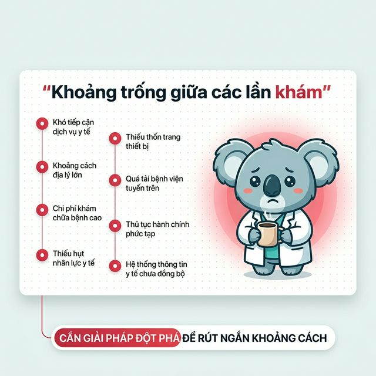
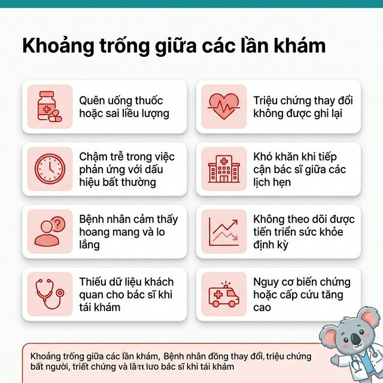
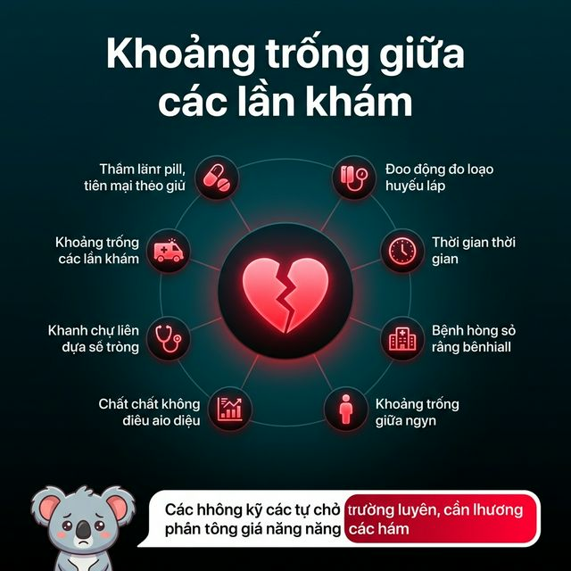

Option A — Timeline dọc + Mascot lớn
Timeline dọc 8 vấn đề bên trái, mascot koala buồn chiếm vùng lớn bên phải. Phong cách diagnostic report.

Option B — Grid 2×4 cards + Mascot nhỏ góc
Grid 2×4 cards toàn slide, mỗi card có icon đỏ + text. Mascot nhỏ góc dưới. McKinsey/BCG consulting style.

Option C — Dark mode infographic
Nền tối gradient, icon phát sáng neon đỏ xoay quanh trung tâm. Apple WWDC keynote aesthetic.
